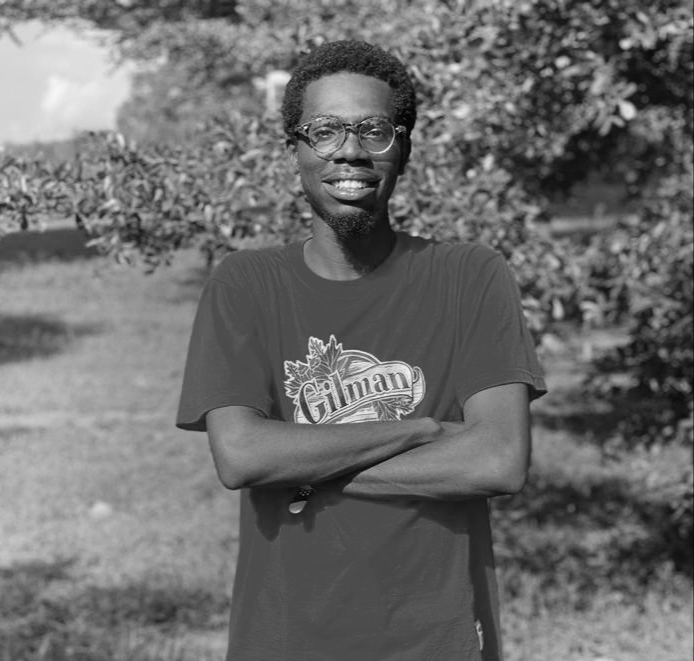

Lucky Nkwocha
I'm interested in distributed systems, machine learning and cloud
engineering

About Me
-
I am always up for a good intellectually stimulating conversation with
someone who can match my intellect. I don't mean this in a rude way.
-
I have been a chess player for about a decade but I don't
think I ever really got good at it; just plain-ass average.
-
Nevertheless, I am still very likely to beat you in a game of chess still. Apologies and
no apologies.
-
I am a firm proponent of human freedom and social
democracy.
- Feel free to leave me a message if you need help with anything.
More..
-
I do a lot of recreational reading because I am interested in knowing a
lot of stuff.
- I conciously make efforts to improve my English vocab.
- I recently picked up French and Spanish. Don't ask me why.
-
I read a lot. I have a somewhat utopian dream to spend a huge chunk of
my life reading.
-
I am always looking for new challenges and interesting stuff to keep me
occupied.
-
You can find me lurking around intelligent spaces like Quora and Reddit.
I have a lot of hobbies but not a lot of free time
-
I enjoy teaching if my student is interested in learning, otherwise; I
will take a solid pass.
-
There are a plethora of places I would love to travel to but I currently
cannot afford them. Working on changing that soon.
-
If you have any question, offer or opportunity that could make my life more interesting, get in touch with me via
email.
-
For the reason stated above, I will only respond to those proposals
that are a good match for my schedule and interests.
-
I have both WhatsApp and X. If you know me personally, we probably
already connected on WhatsApp. If not, here is my
X profile.
-
I do have a
linkedin
but I never share my thoughts there.
-
I have a poorly written blog but I have been
very lazy to put it in order.
Want to support my work?
I appreciate your kindness and generosity. In my stead, please donate to
charitable causes within your locale. You have my utmost and sincerest
gratitude as you bring ripples of joy and laughter into the lives of others.